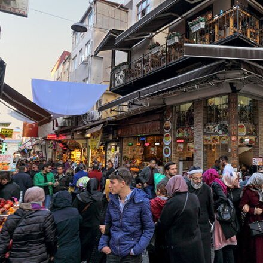

Рынок Рустем Паша


Рустем Паша Махаллеси, ул.Эрзак Амбары, №92, Эминоню – Фатих, Стамбул, Турция
Эти рыночные улицы многие туристы незаслуженно обделяют вниманием, а находятся они совсем близко к популярным маршрутам. Лавки базара Рустем Паша расположены между одноименной мечетью и Египетским рынком.
Здесь продается практически все: посуда и кухонная утварь, предметы быта, текстиль, сладости и пряности. Стоит отметить, что вся эта продукция, за исключением, может быть, сладостей, предлагается по низким ценам.
Именно на улицах этого рынка находится знаменитая лавка по продаже турецкого кофе — KURUKAHVECI MEHMET EFENDI